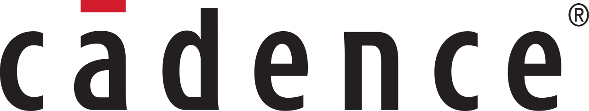
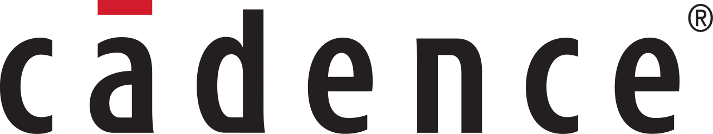
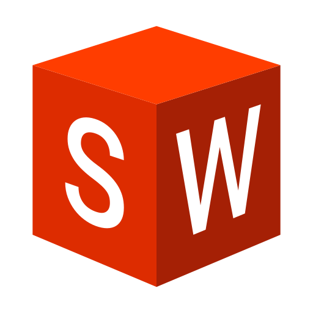

Hansa Marasinghe
Biomedical Engineering Undergraduate
About Me
I am a passionate Biomedical Engineering student with a keen interest in developing solutions at the intersection of electronics and healthcare. My research experience spans multiple domains, including Human-Computer Interaction (HCI) and haptic feedback systems, 3D printing, wearable technology, and biosignal processing. Additionally, I have worked on projects involving analog and digital IC design, as well as hardware acceleration.
Research
3D-Printed Flexible EEG Electrodes for Neonatal Monitoring
As part of the Braineocare25 project, we developed flexible, fully 3D-printed EEG electrodes tailored for neonatal seizure prediction. Our innovative design successfully captured high-quality EEG signals from team members, validating its potential for non-invasive, comfortable monitoring in vulnerable infants. This advancement paves the way for safer neurodiagnostic tools in NICUs.
Integrating Force Sensing with Electro-Tactile Feedback
We developed a novel 3D-printed electro-tactile interface that simultaneously senses force and delivers tactile feedback, eliminating the need for separate sensors. Validated through a user study (N=10), the approach simplifies design complexity while maintaining flexibility—opening new possibilities for intuitive, sensor-free tactile interfaces in wearables.
PaperProjects
SIMD Matrix Accelerator
We have designed a system integrating our SIMD processor and ARM core in zync SOC. We can easily change the number of processing elements (PE) in our SIMD processor and update the system to support it.
GitHubFitness Rubber Band Monitor
The Fitness Rubber Band Monitor is a wearable device designed to track and analyze resistance band exercises. Using sensitive strain gauge sensors integrated into the rubber band, the system detects resistance variations during stretching.
GitHubDesign and Implementation of a Custom System Bus
Designed and implemented a system bus on FPGA, inspired by AMBA 2 specifications. Successfully developed split-transaction capable slaves and arbiters, verified through simulation. This project helped us to gain skills in bus protocols, FPGA programming, and arbitration techniques for efficient data transfer.
GitHubProject-Sitzu
Migraine therapeutic device that utilizes nerve stimulation to reduce migraine pain. This was my first guided group project,gained a good understanding of how to tackle a real world problem and come-up with a solution based on the technical knowledge I have. We were able to design and fabricate a functional prototype.
GitHubTechnical Skills
Electronics

 

Programming


3D Designing
Awards & Achievements
2nd Runners Up | Brainstorm 2025
Awarded for the innovative Braineocare25 neonatal seizure prediction system.
Notes and Briefs- Best Paper Award | Ubicomp/ISWC 2024
Awarded for the paper "Integrating Force Sensing with Electro-Tactile Feedback in 3D Printed Haptic Interfaces".
Contact Me
Feel free to reach out for collaborations, research opportunities, or just to connect!